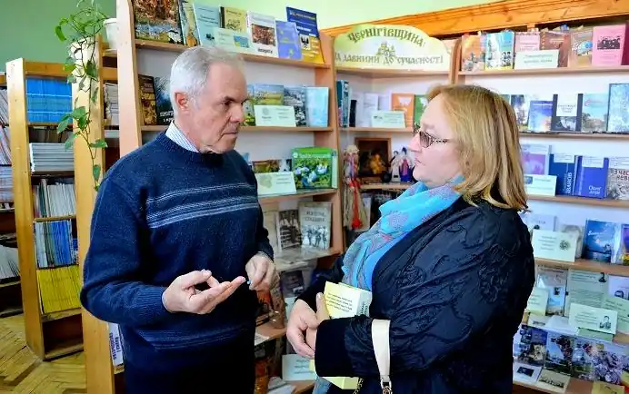

Народився 25 липня 1956 року в стародавньому містечку Короп Чернігівської області в ремісничій з діда-прадіда сім'ї. Як по батьковій, так і по материній лінії всі чоловіки в роду були майстрами: пічниками, гончарами, шевцями, теслярами. Пологовий будинок стояв на самісінькій окраїні Коропа, в сосновому бору: оскільки пуповина автора закопана в лісі та ще й поряд з тисячолітніми могилами літописних сіверян, то це, за словами автора, і стало єдиною причиною його незрадливої любові до історії Сіверщини та її чарівної природи: Десни, лугу й соснового лісу.
Шкільні науки давалися легко. Опісля навчався в Конотопському будівельному технікумі, служив у радянській армії, здобував вищу освіту в Московському інституті інженерів залізничного транспорту. Загалом у Москві прожив 16 років: навчання, робота на будівництвах, під час горбачовської "перебудови" раптовий перехід на абсолютно далеке від набутої професії поприще – в рекламу. Мав у Москві власну успішну рекламну агенцію, навіть створив перший і, мабуть, єдиний на руїнах СРСР музей реклами з 5 тисячами одиниць зберігання.
Оскільки зв'язку з Україною не рвав і свого життя без Десни не мислив, а світська левиця Москва на початку дев'яностих несподівано перетворилась на бридку торгашку з огидними манерами, то мусив рішуче порвати з минулим і в 1995 році повернувся в Україну – назавжди. Життя в мегаполісі давно набридло, тож понад усе хотілося тихого спокійного життя в глибокій чернігівській провінції – ця мета реалізувалася повністю. Відчувши в рекламі смак до творчості, взявся чарувати над деревом. Більше десяти років займався поблизу Прилук малим столярним бізнесом: меблі, двері, вікна – все з натурального дерева. Проте з причини непереборних обставин мусив полишити улюблену справу. Працював директором комунального підприємства, інженером на Гнідинцівському газопереробному заводі. Думка написати щось своє народилась в період Помаранчевої революції. Проте вільний час на письмо з'явився лише коли почав працювати на газопереробному заводі – з літа 2009 року. Першою книгою стала повість "Одвічний Дух Десни" – про стосунки між Людиною і Природою, яку дописав у вересні 2013 року. Через чотири роки, вже на пенсії, завершив історичний роман "Відступник", що став першим у тетралогії "Хоробор", остання частина якої ще в роботі. З романом "Відступник" дебютував у 2018 році на Міжнародному літературному конкурсі "Коронація слова" і одразу ж отримав І премію. Живе в Прилуцькому районі Чернігівської області. Зв'язатись з автором можна через його сторінку у Facebook .